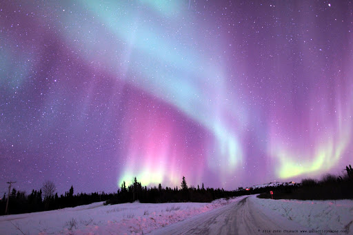

Аляска (англ. Alaska) — найбільший за територією та найпівнічніший штат США в північно-західній частині Північної Америки, що займає півострів Аляска: усю північно-західну частину материка, Алеутські острови й архіпелаг Олександра. Загальна площа — 1 717 855 км²; площа суходолу — 1 478 457 км². Аляска стала 49-м штатом Сполучених Штатів 3 січня 1959. У Беринговій протоці розташований морський кордон з російським Чукотським автономним округом. Межує з канадською провінцією Британська Колумбія та територією Юкон. На півночі омивається водами Чукотського моря та моря Бофорта (Північний Льодовитий океан), на півдні і південному заході — водами Тихого океану.
Місце розташування
Походження назви
Назва походить від алеутського «alaxsxaq» (читати алахсхак) — «об'єкт, на який спрямована сила моря». Спочатку Аляскою називалася тільки південно-західна частина території нинішнього штату (Аляска (затока), Аляска (півострів)). Назва закріплена з XVIII століття.